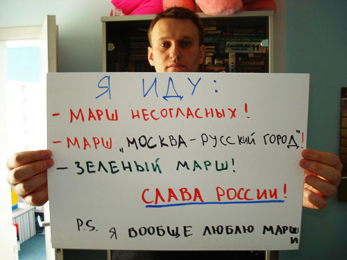

Звезда Алексея Навального, из интернета жгущего сердца властей, похоже так и не сможет разгореться как хотелось бы самому Алексею и его поклонникам.
Сидя за компьютером легко представить, что Навальный везде. Его сравнивают даже с молодым Ельциным, а отдельным блогерам кажется что Алексей связан аж с Медведевым.
Обнародованное 6 мая исследование аналитического центра Юрия Левады несколько охлаждает пыл и похоже отражает реальную картину.
В репрезентативной выборке опрос проведенного специалистами центра 15-18 апреля этого года приняли участие 1600 человек в возрасте 18 лет и старше в 130 населенных пунктах 45 регионов страны. Статистическая погрешность данных этих исследований не превышает 3,4%.
Респондентам были заданы несколько вопроса, касающихся Алексея Навального.
На вопрос «Знаете ли вы, кто такой Алексей Навальный?» ответили утвердительно только 6% респондентов. Причем в Москве таких людей набралось 15%, а среди пользователей интернета — 9% аудитории.
Кроме этого был задан вопрос «Если бы Алексей Навальный выдвинул свою кандидатуру на выборах Президента России, вы бы проголосовали за него или нет?».
37% респондентов, знающих о деятельности Алексея Навального ответили «Скорее нет»
19% — «Определённо нет»
«Определенно, да» — ответили только 5% россиян, еще 28% ответили, что «Возможно да». Напомню это только среди тех, кто знает об Алексее Навальном вообще.
Да и среди тех, кому деятельность Алексея знакома наблюдается потеря интереса и к нему самому и к организованному им проекту «Роспил». Разоблачительные сенсации уже приелись. Не так манят. Писать об одном и том же уже надоело всем, пусть даже и результаты иногда от такой борьбы с коррупцией всё-таки есть.

Охоч до зрелищ русский народ, но пресыщается быстро однообразными зрелищами, а как только дело доходит до дела идет дальше, в поисках иных зрелищ.
Кто следующий?
[poll id="26"]